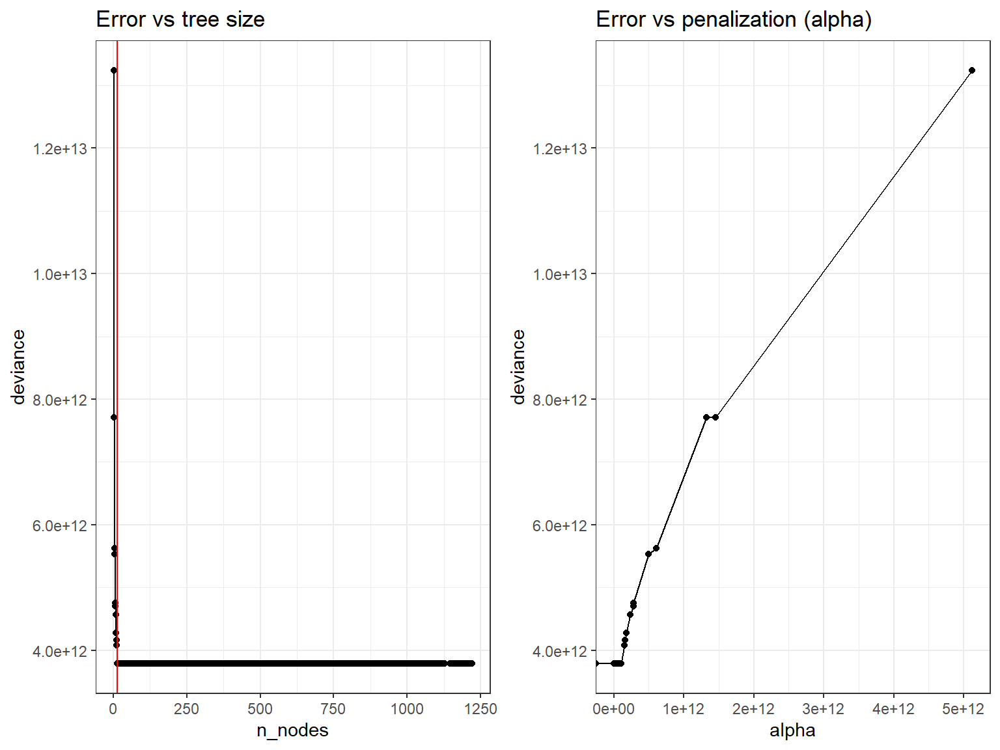
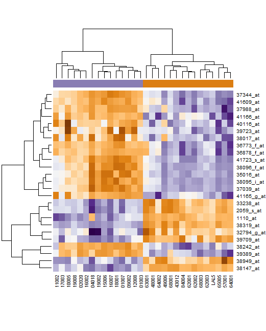

# Helper packages
library(dplyr) # for data wrangling
library(ggplot2) # for awesome plotting
library(doParallel) # for parallel backend to foreach
library(foreach) # for parallel processing with for loops
# Modeling packages
library(caret) # for general model fitting
library(rpart) # for fitting decision trees
library(ipred) # for fitting bagged decision treesDecision Trees Lab 2: Ensembles
Introduction
This lab presents some examples on building ensemble predictors with a variety of methods.
In order to facilitate the comparison between methods and tools the same prediction problem will be solved with distinct methods and distinct parameter settings.
The example problem is the prediction of house prices in the AmesHousing dataset, a dataset with multiple variables about cost of housing in Ames, IA.
The dataset
Packge AmesHousing contains the data jointly with some instructions to create the required dataset.
We will use, however data from the modeldata package where some preprocessing of the data has already been performed (see: https://www.tmwr.org/ames)
if(!require(modeldata))
install.packages("modeldata", dep=TRUE)
data(ames, package = "modeldata")The dataset has 74 variables so a descriptive analysis is not provided.
dim(ames)[1] 2930 74boxplot(ames)Spliting the data into test/train
We split the data in separate test / training sets and do it in such a way that samplig is balanced for the response variable, Sale_Price.
if(!require(rsample))
install.packages("rsample", dep=TRUE)
# Stratified sampling with the rsample package
set.seed(123)
split <- rsample::initial_split(ames, prop = 0.7,
strata = "Sale_Price")
ames_train <- training(split)
ames_test <- testing(split)A simple regression tree
As a first attempt to predict Sales_Price we build a unique regression tree, which as has been discussed is a weak learner. The tree package will be used to fit and optimize the tree.
We build a tree using non-restrictive parameters. This will allow space for pruning it better.
We use the tree.control function to set the values for the control parameter in the tree function.
Let’s start with a tree with the default values.
require(tree)
ctlPars <-tree.control(nobs=nrow(ames_train), mincut = 5, minsize = 10, mindev = 0.01)
ames_rt1 <- tree::tree(
formula = Sale_Price ~ .,
data = ames_train,
split = "deviance",
control = ctlPars)
summary(ames_rt1)
Regression tree:
tree::tree(formula = Sale_Price ~ ., data = ames_train, control = ctlPars,
split = "deviance")
Variables actually used in tree construction:
[1] "Neighborhood" "First_Flr_SF" "Gr_Liv_Area" "Total_Bsmt_SF"
[5] "Second_Flr_SF"
Number of terminal nodes: 12
Residual mean deviance: 1.428e+09 = 2.909e+12 / 2037
Distribution of residuals:
Min. 1st Qu. Median Mean 3rd Qu. Max.
-227100.0 -21240.0 -237.2 0.0 19080.0 212000.0 This gives a small tree with only 11 terminal nodes.
We can visualize the tree
plot(x = ames_rt1, type = "proportional")
text(x = ames_rt1, splits = TRUE, pretty = 0, cex = 0.6, col = "firebrick")In order to optimize the tree we compute the best cost complexity value
set.seed(123)
cv_ames_rt1 <- tree::cv.tree(ames_rt1, K = 5)
optSize <- rev(cv_ames_rt1$size)[which.min(rev(cv_ames_rt1$dev))]
paste("Optimal size obtained is:", optSize)[1] "Optimal size obtained is: 12"The best value of alpha is obtained with the same tree, which suggests that there will be no advantage in pruning. This is confirmed by plotting tree size vs deviance which shows that the tree with the samllest error is the biggest one that can be obtained.
library(ggplot2)
library(ggpubr)
resultados_cv <- data.frame(
n_nodes = cv_ames_rt1$size,
deviance = cv_ames_rt1$dev,
alpha = cv_ames_rt1$k
)
p1 <- ggplot(data = resultados_cv, aes(x = n_nodes, y = deviance)) +
geom_line() +
geom_point() +
geom_vline(xintercept = optSize, color = "red") +
labs(title = "Error vs tree size") +
theme_bw()
p2 <- ggplot(data = resultados_cv, aes(x = alpha, y = deviance)) +
geom_line() +
geom_point() +
labs(title = "Error vs penalization (alpha)") +
theme_bw()
ggarrange(p1, p2)We could have tried to obtain a bigger tree with the hope that pruning might find a better tree. This can be done setting the tree parameters to minimal values.
ctlPars2 <-tree.control(nobs=nrow(ames_train), mincut = 1, minsize = 2, mindev = 0)
ames_rt2 <- tree::tree(
formula = Sale_Price ~ .,
data = ames_train,
split = "deviance",
control = ctlPars2)
summary(ames_rt2)
Regression tree:
tree::tree(formula = Sale_Price ~ ., data = ames_train, control = ctlPars2,
split = "deviance")
Variables actually used in tree construction:
[1] "Neighborhood" "First_Flr_SF" "Garage_Cond" "Gr_Liv_Area"
[5] "Central_Air" "Garage_Area" "Enclosed_Porch" "Lot_Area"
[9] "Longitude" "Land_Contour" "MS_SubClass" "Lot_Frontage"
[13] "Lot_Config" "Year_Built" "MS_Zoning" "Overall_Cond"
[17] "Fireplaces" "BsmtFin_Type_1" "Bsmt_Unf_SF" "Year_Remod_Add"
[21] "Exterior_1st" "Exterior_2nd" "Functional" "Open_Porch_SF"
[25] "Mo_Sold" "Total_Bsmt_SF" "Sale_Condition" "Bldg_Type"
[29] "Heating_QC" "Latitude" "Mas_Vnr_Area" "Garage_Cars"
[33] "Bsmt_Exposure" "Condition_1" "Mas_Vnr_Type" "Second_Flr_SF"
[37] "Alley" "Exter_Cond" "Fence" "Lot_Shape"
[41] "Bsmt_Cond" "Bedroom_AbvGr" "Wood_Deck_SF" "Roof_Style"
[45] "Sale_Type" "BsmtFin_Type_2" "Garage_Type" "Bsmt_Full_Bath"
[49] "Year_Sold" "Garage_Finish" "Screen_Porch" "Half_Bath"
[53] "Foundation" "Full_Bath" "Land_Slope" "TotRms_AbvGrd"
[57] "House_Style"
Number of terminal nodes: 1222
Residual mean deviance: 2579000 = 2.133e+09 / 827
Distribution of residuals:
Min. 1st Qu. Median Mean 3rd Qu. Max.
-2750 -500 0 0 500 2943 This bigger tree has indeed a smaller deviance but pruning provides no benefit:
set.seed(123)
cv_ames_rt2 <- tree::cv.tree(ames_rt2, K = 5)
optSize2 <- rev(cv_ames_rt2$size)[which.min(rev(cv_ames_rt2$dev))]
paste("Optimal size obtained is:", optSize2)[1] "Optimal size obtained is: 12"prunedTree2 <- tree::prune.tree(
tree = ames_rt2,
best = optSize2
)
summary(prunedTree2)
Regression tree:
snip.tree(tree = ames_rt2, nodes = c(61L, 31L, 12L, 13L, 60L,
18L, 19L, 14L, 23L, 10L, 22L, 8L))
Variables actually used in tree construction:
[1] "Neighborhood" "First_Flr_SF" "Gr_Liv_Area" "Total_Bsmt_SF"
[5] "Second_Flr_SF"
Number of terminal nodes: 12
Residual mean deviance: 1.428e+09 = 2.909e+12 / 2037
Distribution of residuals:
Min. 1st Qu. Median Mean 3rd Qu. Max.
-227100.0 -21240.0 -237.2 0.0 19080.0 212000.0 res_cv2 <- data.frame(
n_nodes = cv_ames_rt2$size,
deviance = cv_ames_rt2$dev,
alpha = cv_ames_rt2$k
)
p1 <- ggplot(data = res_cv2, aes(x = n_nodes, y = deviance)) +
geom_line() +
geom_point() +
geom_vline(xintercept = optSize2, color = "red") +
labs(title = "Error vs tree size") +
theme_bw()
p2 <- ggplot(data = res_cv2, aes(x = alpha, y = deviance)) +
geom_line() +
geom_point() +
labs(title = "Error vs penalization (alpha)") +
theme_bw()
ggarrange(p1, p2)
The performance of the trees is hardly different between small or big tree in pruned or non-pruned version.
ames_rt_pred1 <- predict(ames_rt1, newdata = ames_test)
test_rmse1 <- sqrt(mean((ames_rt_pred1 - ames_test$Sale_Price)^2))
paste("Error test (rmse) for initial tree:", round(test_rmse1,2))[1] "Error test (rmse) for initial tree: 39691.13"ames_rt_pred2 <- predict(ames_rt2, newdata = ames_test)
test_rmse2 <- sqrt(mean((ames_rt_pred2 - ames_test$Sale_Price)^2))
paste("Error test (rmse) for big tree:", round(test_rmse2,2))[1] "Error test (rmse) for big tree: 37064.3"ames_pruned_pred <- predict(prunedTree2, newdata = ames_test)
test_rmse3 <- sqrt(mean((ames_pruned_pred - ames_test$Sale_Price)^2))
paste("Error test (rmse) for pruned tree:", round(test_rmse3,2))[1] "Error test (rmse) for pruned tree: 39691.13"improvement <- (test_rmse3-test_rmse2)/test_rmse2*100The MSE for each model will be saved to facilitate comparison with other models
errTable <- data.frame(Model=character(), RMSE=double())
errTable[1, ] <- c("Default Regression Tree", round(test_rmse1,2))
errTable[2, ] <- c("Big Regression Tree", round(test_rmse2,2))
errTable[3, ] <- c("Optimally pruned Regression Tree", round(test_rmse3,2))In summary, what is illustrated by this example is that, for some datasets, it is very hard to obtain an optimal tree because there seems to be a minimum complexity which is very hard to decrease.
Building a saturated tree only provides a slight improvement of less than 5% in RMSE at the cost of having to use 5 times more variables in a tree withh more than 1000 nodes.
This is a good point to consider using an ensemble instead of single trees.
Bagging trees
The first attempt to build an ensemble may be to apply bagging that is building multiple trees from a set of resamples and averaging the predictions of each tree.
In this example, rather than use a single pruned decision tree, we can use, say, 100 bagged unpruned trees (by not pruning the trees we’re keeping bias low and variance high which is when bagging will have the biggest effect).
Bagging is equivalent to RandomForest if we use all the trees so the library randomForest is used.
# make bootstrapping reproducible
set.seed(123)
library(randomForest)
bag.Ames <- randomForest(Sale_Price ~ .,
data = ames_train,
mtry = ncol(ames_train-1),
# ntree = 100,
importance = TRUE)Bagging, as most ensemble procedures, can be time consuming. See Boehmke and Greenwell (2020) for an example on how to easily parallelize code, and save time.
show(bag.Ames)
Call:
randomForest(formula = Sale_Price ~ ., data = ames_train, mtry = ncol(ames_train - 1), importance = TRUE)
Type of random forest: regression
Number of trees: 500
No. of variables tried at each split: 73
Mean of squared residuals: 722828439
% Var explained: 88.8yhat.bag <- predict(bag.Ames, newdata = ames_test)
plot(yhat.bag, ames_test$Sale_Price)
abline(0, 1)test_rmse_bag <- sqrt(mean(mean((yhat.bag - ames_test$Sale_Price)^2)))
paste("Error test (rmse) for bagged tree:", round(test_rmse_bag,2))[1] "Error test (rmse) for bagged tree: 24796.54"errTable[4, ] <- c("Bagged Tree (ntree=100)", round(test_rmse_bag,2))Bagging tends to improve quickly as the number of resampled trees increases, and then it reaches a platform.
The figure below has been produced iterated the computation above over nbagg values of 1–200 and applied the bagging() function.

Variable importance
Due to the bagging process, models that are normally perceived as interpretable are no longer so.
However, we can still make inferences about how features are influencing our model using feature importance measures based on the sum of the reduction in the loss function (e.g., SSE) attributed to each variable at each split in a given tree.
require(dplyr)
VIP <- importance(bag.Ames)
VIP <- VIP[order(VIP[,1], decreasing = TRUE),]
head(VIP, n=30) %IncMSE IncNodePurity
Gr_Liv_Area 58.850401 1.787033e+12
Neighborhood 49.410923 5.095346e+12
Total_Bsmt_SF 32.932428 9.524729e+11
First_Flr_SF 24.633630 5.279402e+11
Year_Remod_Add 24.578718 2.035538e+11
MS_SubClass 21.761033 1.424198e+11
Overall_Cond 18.759503 9.691400e+10
BsmtFin_Type_1 18.499865 6.153661e+10
Garage_Cars 18.150624 2.102481e+12
Garage_Area 15.299616 2.692346e+11
Garage_Cond 14.954903 4.667409e+10
Fireplaces 14.525355 5.737344e+10
Lot_Area 14.272773 1.487081e+11
Exterior_1st 14.213733 1.078685e+11
Second_Flr_SF 13.477682 1.382054e+11
Exterior_2nd 13.267601 6.793371e+10
Year_Built 12.922042 2.278559e+11
Bsmt_Unf_SF 12.760030 7.922741e+10
Longitude 11.813764 6.577466e+10
Garage_Type 11.476481 4.197270e+10
Garage_Finish 10.564749 2.169831e+10
Latitude 10.396311 7.109725e+10
Bsmt_Cond 10.122780 1.502036e+10
Central_Air 10.094562 2.126183e+10
Bsmt_Exposure 10.037850 5.264230e+10
Bsmt_Full_Bath 9.526083 3.195805e+10
Open_Porch_SF 9.499377 4.564048e+10
TotRms_AbvGrd 7.683839 3.005629e+10
Full_Bath 7.548806 7.584251e+10
Heating_QC 7.436139 1.665949e+10Importance values can be plotted directly:
invVIP <-VIP[order(VIP[,1], decreasing = FALSE),1]
tVIP<- tail(invVIP, n=15)
barplot(tVIP, horiz = TRUE, cex.names=0.5)Alternatively one can use the vipfunction from the vip package
if (!require(vip)) install.packages("vip", dep=TRUE)
vip(bag.Ames, num_features = 40, bar = FALSE)A random forest to improve bagging
Bagging can be improved if, instead of using all variables to build each tree we rely on subsets of variables, which are chosen at each split in order to decrease correlation between trees.
Random Forests are considered to produce good predictors with default values sop no parameter is set in a first iteration.
# make bootstrapping reproducible
set.seed(123)
require(randomForest)
RF.Ames <- randomForest(Sale_Price ~ .,
data = ames_train,
importance = TRUE)show(RF.Ames)
Call:
randomForest(formula = Sale_Price ~ ., data = ames_train, importance = TRUE)
Type of random forest: regression
Number of trees: 500
No. of variables tried at each split: 24
Mean of squared residuals: 723328698
% Var explained: 88.79yhat.rf <- predict(RF.Ames, newdata = ames_test)
plot(yhat.rf, ames_test$Sale_Price)
abline(0, 1)test_rmse_rf <- sqrt(mean(mean((yhat.rf - ames_test$Sale_Price)^2)))
paste("Error test (rmse) for Random Forest:", round(test_rmse_rf,2))[1] "Error test (rmse) for Random Forest: 24540.96"errTable[5, ] <- c("Random Forest (defaults)", round(test_rmse_rf,2))There is some improvement on bagging but it is clearly small.
Notice however that the percentage of explained variance is bigger for RF than for Bag
Random forests for gene expression data
Random forest have been particularly successful in Bioinformatics where high dimensional data are common.
One common application has been the use of RF to derive cancer-related classifiers based on gene expression data.
Gene expression data are high dimensional tabular datasets where for each inividual the expression of a high number of genes has been measured
The example uses “RMA-preprocessed gene expression data” obtained by (Chiaretti et al. 2004). Briefly they consist of:
- 12625 genes (hgu95av2 Affymetrix GeneChip)
- 128 samples (arrays)
- phenotypic data on all 128 patients, including:
- 95 B-cell cancer
- 33 T-cell cancer
A standard bioinformatic preprocessing has been applied.
The code below is shown for consistency, but unless you are interested/familiar with Bioconductor and microarray data storage and preprocessing it can be skipped.
This code generates a simplified dataset that is saved into a binary file `data/smallALL.Rda’. This file can be directly loaded for the example.
if(!require(affy)) BiocManager::install("affy")
if(!require(genefilter)) BiocManager::install("genefilter")
if(!require(ALL)) BiocManager::install("ALL")
library(affy)
library(ALL)
data(ALL)Preprocessing is applied to obtain relevant subset of data Also, keep 30 arrays here JUST for computational convenience #
library(genefilter);
e.mat <- 2^(exprs(ALL)[,c(81:110)])
ffun <- filterfun(pOverA(0.20,100))
t.fil <- genefilter(e.mat,ffun)
smallData <- log2(e.mat[t.fil,])
group <- c(rep('B',15),rep('T',15))
dim(smallData)
colnames(smallData)
infoData <- cbind(pData(ALL)[81:110,1:5], group) # column "BT" defines groups
save (smallData, infoData, file="data/smallALL.Rda")load (file = "data/smallALL.Rda")We use the randomForest library to build an “out-of-the box” classifier.
if (!require(randomForest)) install.packages("randomForest", dep=TRUE)
library(randomForest)
set.seed(1234)
system.time(
rf <- randomForest(x=t(smallData),
y=as.factor(infoData$group),
ntree=10000)
) user system elapsed
6.78 0.00 13.32 Inspect the results
rf
Call:
randomForest(x = t(smallData), y = as.factor(infoData$group), ntree = 10000)
Type of random forest: classification
Number of trees: 10000
No. of variables tried at each split: 66
OOB estimate of error rate: 0%
Confusion matrix:
B T class.error
B 15 0 0
T 0 15 0Now look at variable importance:
imp.temp <- abs(rf$importance[,])
t <- order(imp.temp,decreasing=TRUE)
plot(c(1:nrow(smallData)),imp.temp[t],log='x',cex.main=1.5, xlab='gene rank',ylab='variable importance',cex.lab=1.5, pch=16,main='ALL subset results') 
Or, a better plot:
varImpPlot(rf, n.var=25, main='ALL Subset Results') 
We can focus on the 25 most important genes
gn.imp <- names(imp.temp)[t]
gn.25 <- gn.imp[1:25]
# vector of top 25 genes, in orderWe can use the Bioinformatics Bioconductor libraries to find out more about these these genes. Information on how to do it can be found at https://aspteaching.github.io/An-Introduction-to-Pathway-Analysis-with-R-and-Bioconductor/.
Again, the code is shown but it has been run aside this lab and the result saved as a binary file.
if(!require(hgu95av2.db)) BiocManager::install("hgu95av2.db")
if(!require(AnnotationDbi)) BiocManager::install("AnnotationDbi")
library(hgu95av2.db)
geneAnots <- AnnotationDbi::select(hgu95av2.db, gn.25,
c("SYMBOL", "GENENAME"))
head(geneAnots, n=25)knitr::include_graphics("images/geneNames.png")
To end the exploration we plot heatmap that shows how the two groups differ in gene expression.
sigGenes<- smallData[gn.25,]
t <- is.element(rownames(small.eset),gn.25)
sig.eset <- small.eset[t,]
# matrix of expression values, not necessarily in order
library(RColorBrewer)
hmcol <- colorRampPalette(brewer.pal(11,"PuOr"))(256)
colnames(sig.eset) <- group
# This will label the heatmap columns
csc <- rep(hmcol[50],30)
csc[group=='T'] <- hmcol[200]
# column side color will be purple for T and orange for B
heatmap(sigGenes,scale="row", col=hmcol,ColSideColors=csc) knitr::include_graphics("images/allHeatMap.png")
Random Forests with Python
The following link points to a good brief tutorial on how to train and evaluate Random Forests using Python
References
Boehmke, Bradley, and Brandon Greenwell. 2020. The r Series Hands-on Machine Learning with r. CRC Press. https://www.routledge.com/Hands-On-Machine-Learning-with-R/Boehmke-Greenwell/p/book/9781138495685.
Chiaretti, Sabina, Xiaochun Li, Robert Gentleman, Antonella Vitale, Marco Vignetti, Franco Mandelli, Jerome Ritz, and Robin Foa. 2004. “Gene expression profile of adult T-cell acute lymphocytic leukemia identifies distinct subsets of patients with different response to therapy and survival.” Blood 103 (7): 2771–78. https://doi.org/10.1182/blood-2003-09-3243.